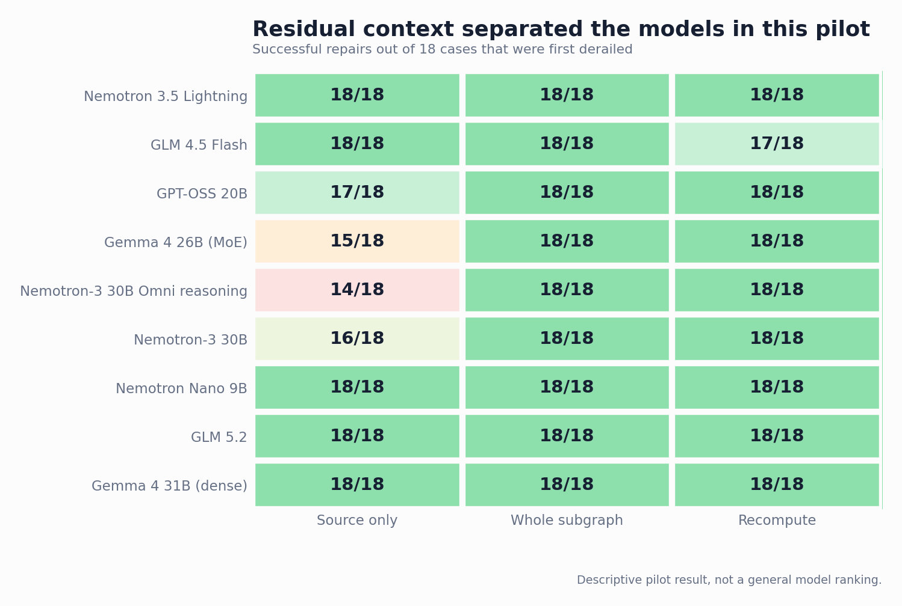

This is the archived v1 snapshot (four endpoints, August 16). A larger Pilot v2 with nine endpoints, controlled pairs and a reasoning ablation supersedes it.
Context Repair for LLMs: Pilot v1
Propagation, pruning, and dependency-ordered recomputation.
The problem
Suppose an LLM conversation contains a wrong correction. You remove that turn. Is the conversation repaired?
Not necessarily. By the time the error is noticed, later answers may already have repeated it, calculated from it, and turned it into new claims. Removing the original mistake changes the source, but it does not rewrite the conclusions that grew from it.
This is difficult to see in a linear transcript. It becomes much more obvious when the conversation is represented as a dependency graph.
A controlled example
The flagship case is deliberately simple so that the answer can be scored without an LLM judge. Four crates contain 30 parts each, plus 11 loose parts. A verified recount changes 30 to 24.
A false turn then restores 30. Three descendants propagate that mistake: 4 × 30 = 120, then 120 + 11 = 131, followed by a restatement of the stale working values. The final question always asks for one number using the fixed inputs.

Five graph conditions
| Condition | Context presented | What it tests |
|---|---|---|
| Clean | Verified value and clean intermediate turns | Can the model solve the task at all? |
| Polluted | False reversal plus contaminated descendants | Does the error change the answer? |
| Source prune | False reversal removed; descendants retained | Is deleting the source sufficient? |
| Subgraph prune | False reversal and descendants removed | Does complete excision restore the answer? |
| Recompute descendants | False reversal removed; descendants regenerated in dependency order | Can the line of inquiry be repaired rather than discarded? |
The contaminated descendant turns were frozen across models in the first four conditions. Only the recompute condition asked each model to regenerate them. This separates sensitivity to identical faulty history from the ability to rebuild it.
The flagship result
Four model endpoints were tested at temperature 0 with provider-default reasoning settings.
| Graph condition | GLM 4.5 Flash | Nemotron 3.5 Lightning | Gemma 4 26B | GPT-OSS 20B |
|---|---|---|---|---|
| Clean | 107 | 107 | 107 | 107 |
| Polluted | 131 | 131 | 131 | 131 |
| Delete source only | 107 | 107 | 131 | 131 |
| Delete contaminated subgraph | 107 | 107 | 107 | 107 |
| Delete source and recompute | 107 | 107 | 107 | 107 |
This is not evidence of hidden memory. The residual error remained visibly present in downstream statements. Deleting one node does not automatically invalidate text that was already generated from it.
What happened across the full pilot
The pilot contains 9 task families at propagation depths 1, 2, and 3. Each model ran 135 conditions. Headline repair metrics are conditioned on cases answered correctly under clean context and incorrectly after pollution.
Context sensitivity was consistent
- Clean context: 27/27 correct for every model.
- Explicit misinformation: 9/9 caused a wrong answer for every model.
- False supersession of a verified update: 9/9 caused a wrong answer for every model.
- A numerically similar but irrelevant aside: 0/9 caused a wrong answer for every model.
Repair strategy mattered
| Repair operation | Recovered | Recovery rate |
|---|---|---|
| Delete contaminated subgraph | 72/72 | 100% |
| Delete source and recompute descendants | 71/72 | 98.6% |
| Delete source only | 68/72 | 94.4% |

All four source-prune failures occurred in false-supersession cases at depth 2 or 3. Gemma showed the clearest pattern: 6/6 at depth 1, 5/6 at depth 2, and 4/6 at depth 3.

What this result means
1. A conversational error can become state
Once an incorrect value has been used in later calculations and summaries, the descendants become independent carriers of the mistake.
2. Removing evidence and repairing consequences are different operations
Deleting the bad source changes what should be believed. It does not necessarily change what later turns already say.
3. Recalculation has to follow dependency order
A child should not be regenerated before its stale parent. ThoughtDAG records these dependencies as edges and replays stale nodes upstream to downstream.
4. The graph is an experimental intervention
In ThoughtDAG, an edge determines which upstream nodes enter the next request. Editing a wire changes serialized context, making pruning and replay testable operations rather than visual metaphors.
What this pilot does not establish
This is not a general ranking of the four models. The tasks are synthetic, each endpoint was run once at temperature 0, and provider-default reasoning was not normalized.
The pilot does not reveal why a model generated a token, measure hidden reasoning, or show that every real research conversation benefits from manual graph editing.
It establishes a narrower result: in controlled multi-turn tasks, an erroneous claim can continue to influence an LLM after its source turn is removed because it has propagated into downstream conversation. Removing contaminated descendants or regenerating them in dependency order repairs this residual context more reliably than deleting the source alone.
Reproduce and inspect
The benchmark stores graph cases, exact serialized requests, responses, usage, declarative scores, and importable ThoughtDAG canvases.
- Flagship case specification ↗
- Importable story canvas ↗
- Pilot status and aggregate results ↗
- Benchmark design ↗
ThoughtDAG is the reference implementation used to visualize and reproduce the intervention. It is not the conclusion of the experiment.